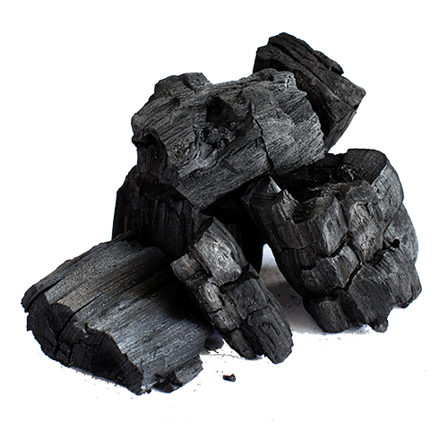
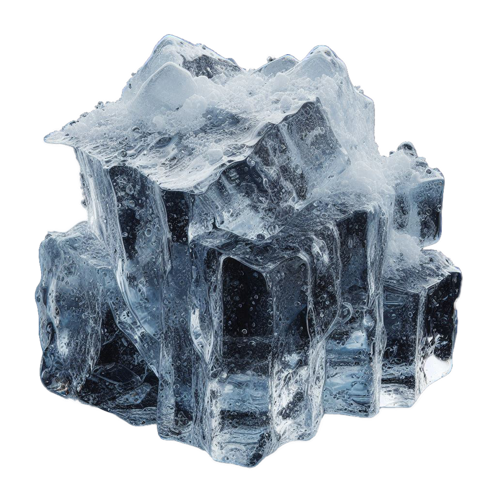
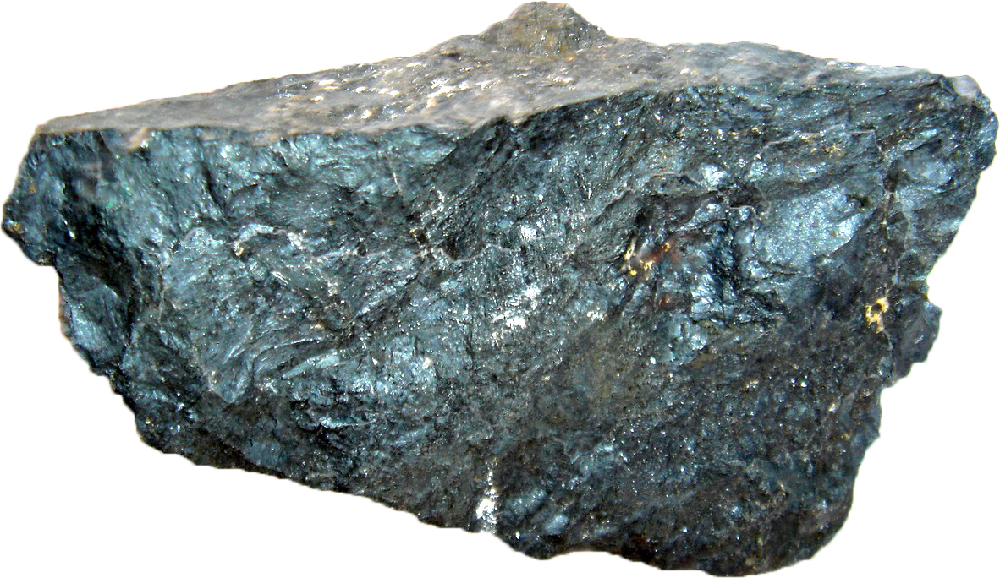
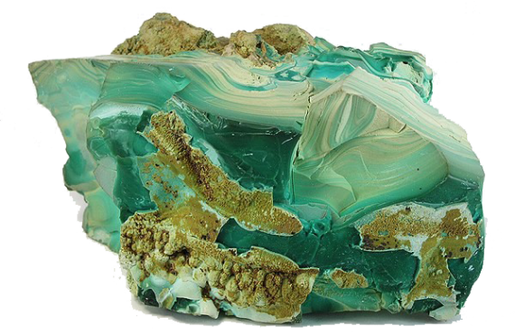
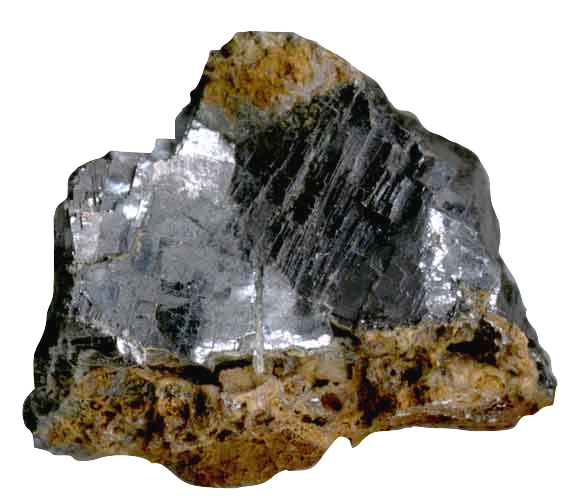

Motion studies
Planetary satellites, comets and asteroids are subject to complicated trajectories as they are influenced by the gravitational force of not only the sun but also the planets and other celestial bodies. Motion study of planetary satellites, comets, and asteroids involves observing and analyzing the or-bits, trajectories, and dynamics of these celestial bodies.
Importance
With the reduction in non-renewable resources, scientists are looking forward to extraterrestrial mining sites and thus, a proper understanding of the surface morphology of specific planets and satellites are of utmost importance in order to fuel future exploration missions and even manned missions, which are guaranteed to be a necessity for the future. The morphologies can also give indirect insights on the chemical composition of the concerned body.
Types of asteroids
Types of comets

C - Type
Carbon based asteroids with organic content
Icy comets
Predominantly composed of ice along with other frozen gases
M - Type
Metallic asteroids containing primarily iron orescarbonecious comets
Contain a significant amount of carbon compounds including carbon black
S - Type
Silicon based asteroids containing different silicates
Mixed comets
Composed of a mixture of dust, gas, ice, and organic compounds
Motion
Studies
Of celestial bodies
Studies